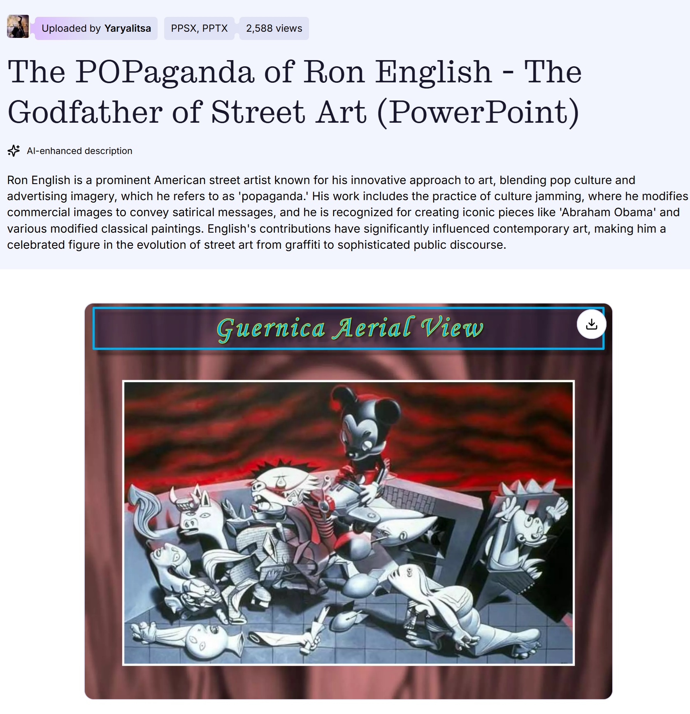

Exhibitions
Guernica, Allouche Gallery, New York, New York, US, September 23–October 19, 2016.
Reimagining “Guernica” / La réinvention du “Guernica”, Museo de la Paz de Gernika, Gernika-Lumo, Bizkaia, Spain, 2017; the composition was presented as a print on stretched canvas, not as the original painting.
Literature
Ron English, Original Grin: The Art of Ron English (Paris: Cernunnos, 2019), p. 208. ISBN 978-2374950938.

Museo de la Paz de Gernika, Ron English: Reimagining “Guernica” / La réinvention du “Guernica” (Gernika-Lumo, Bizkaia, Spain: Museo de la Paz de Gernika, 2017), digital exhibition catalogue / flip-book, available here, accessed April 5, 2026.
aldanov, “Художник Рон Инглиш” (“Artist Ron English”), LiveJournal, November 15, 2010. Online.
“50 варијации на „Герника“ од Пикасо,” Окно.мк, July 11, 2014.

Блинцов, “Ron English поп-арт, клоунада и стёб”, Art Assorty, January 23, 2013.

“POPaganda, art and crimes!”, Chicquero, December 6, 2011.

Notes
Also known as Fly by Reich.
In Original Grin, this work was erroneously reported as 24 × 56 inches.
A later online post on Blatant Calm misidentifies this work as The Ghosts of Guernica.
Ancillary Documentation



Selected Online Circulation
Selected examples of the work’s online circulation, reproduction, or discussion. This list is not exhaustive; it is intended to document representative appearances of the image beyond formal exhibition and publication records.